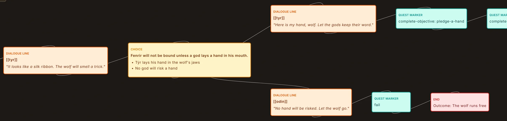
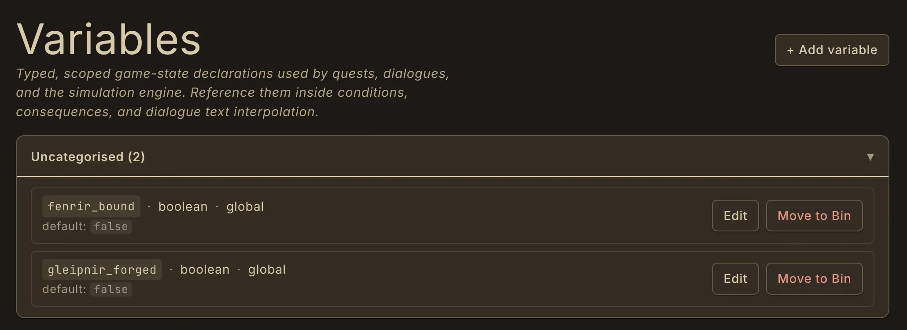
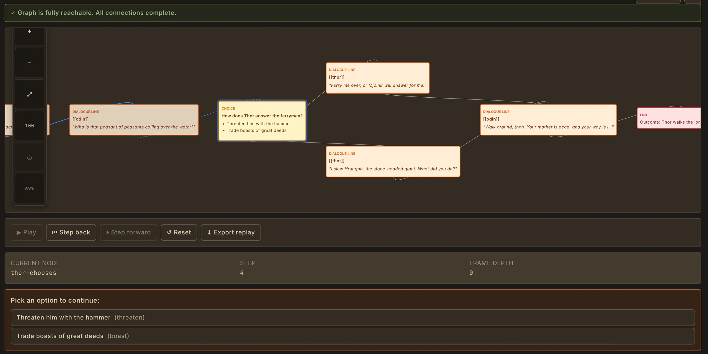

Branching narrative, built on your canon.
Quest and Dialogue editors are node graphs: start and end points, lines, choices, conditions, consequences and quest markers. Speakers, items and places link to the real entries in your world.
Because the narrative lives next to the lore, a renamed character or a changed fact is one entry, not a search through scripts. Story arcs and the Narrative Planner sit alongside for the bigger shape.
- Quest graphs with objectives, choices, conditions and consequences
- Dialogue graphs with speakers, choices and condition-gated branches
- Story Arcs and the Narrative Planner for structure
- Your own entry types and fields in the Entry type editor

Typed variables your graphs read and change.
Declare the facts that can change: true or false, numbers, text, choices, lists, sets, entry references and relationship snapshots, for the whole world or per character, faction or place. Conditions read them, consequences change them, and dialogue text can show them.
Variables are declared up front in one readable file in your world folder, so the state model is something you design, not something inferred from scattered scripts.

Find the broken branch before the build does.
Simulation runs a quest or dialogue graph without a game engine. Step forward and back, choose at each branch, and watch variables and relationships change in the inspector. Start from a fresh state or a saved preset.
When a run ends, Mimir shows the outcome and every node the run never reached. Export the run as a JSON replay to share it or test against later. Simulation is part of Core, on every plan.

Take your canon into the engine.
Export to Engine writes one JSON file per entry type, shaped for Unreal's DataTable import, for Unity's JsonUtility and for Godot 4. It runs on your computer and respects your spoiler threshold. It is a one-way file export, not a live connection.
Plain Markdown and JSON export are on every plan. Export to Engine is on Worldsmith (£14.99 a month) and above. Live engine integrations and round-tripping are later roadmap items.
- Unreal: JSON ready for DataTable import
- Unity: JSON readable by JsonUtility
- Godot: JSON ready for Godot 4
- Plain JSON and Markdown on every plan
Frequently asked questions
- Yes. Export to Engine writes one JSON file per entry type, shaped for Unreal DataTable import, Unity's JsonUtility and Godot 4. It runs locally and is on Worldsmith and above. It is a one-way export, not a live connection.
- Yes. Simulation steps through quest and dialogue graphs, lets you choose at each branch, shows variables changing and reports which nodes were never reached. It is free on every plan.
- No. Mimir is where you design, test and keep the canon for quests, dialogue and lore. You bring the results into your engine with Export to Engine or plain JSON.
- Not yet. Live engine integrations, round-tripping and MCP connections for AI tools are later roadmap items with no release date. Today the route into an engine is the file export.
- In a folder you choose on your own computer, as readable Markdown and YAML files that work well with version control. Mimir also keeps its own history of saved versions.
Design it, test it, ship it.
Mimir's public beta opens soon. Join the beta to be among the first in, or read more about the tools on this page.